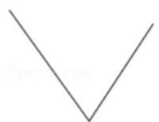
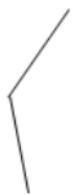
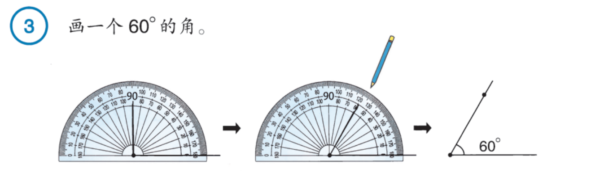
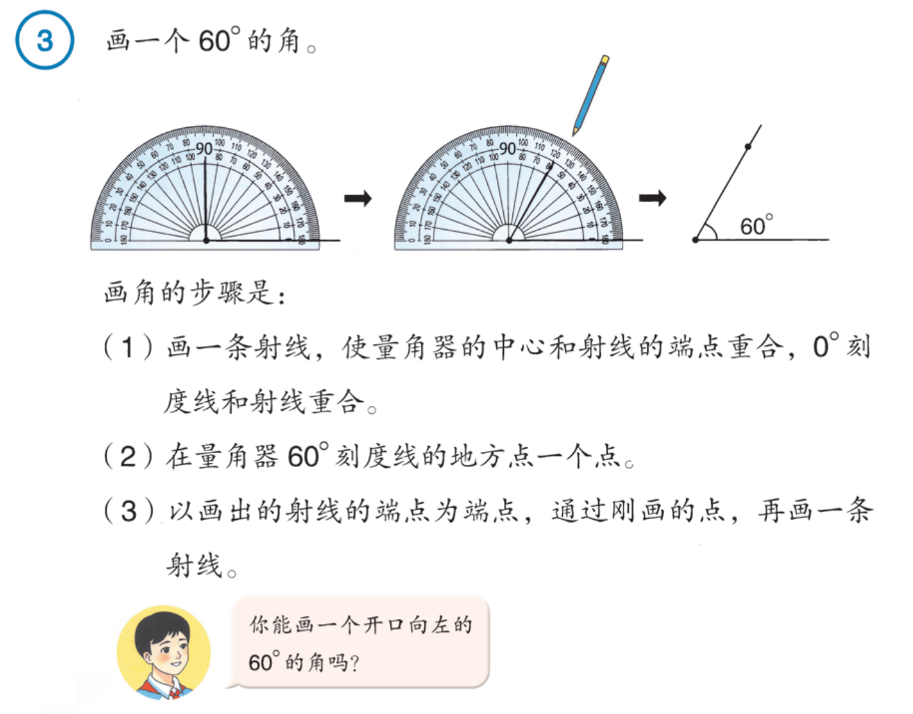
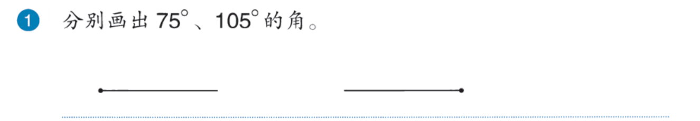

9月21日 · 四年级上册 · 第二单元
量出角，画出角
按度数画角，再用不同工具试一试。
10道主线＋2道接续。主线中共有7次量角或画角；小问已算在原题里。示范不另算题。
准备：量角器、一副三角尺、直尺、铅笔、草稿纸。圆形纸可选。
先打开手写单。A3、A6、A7、A9、R4、R4-V1直接在纸上做，其他题可短答或记录。不要另抄整题。
学习地图
实践活动：1亿有多大 · 寻找宝藏
第二单元
认识角 → 量角与读数 → 今天：画角，试试拼角 → 后续关系与应用
地图表示学习内容，不把做完按钮当成已经掌握。
第一段 · 量与读
第二段 · 画与用
第三段 · 接着算
一段结束可以休息，也可以在任何一题暂停。卡住时用题旁帮助；仍没接上，保留做到的位置即可。
A1 · 1度有多大
先看，再动手
量角是在数：这个角里有多少个 1°。°读作“度”，是角的计量单位符号；例如50度写作50°。
把半圆平均分成180份，每份对应的角是1°。半周是180°，四分之一周是90°。
数字后面的小圆圈写在右上方：50°。它不是数字0。
接着亲手做；看过不等于已经会做。
把一个半圆平均分成180份，每份所对的角是____度。
题源：分层训练《角的度量》第9题
需要帮助时
把半圆想成180个同样大的小角。单位说明在上方，可以回看。
A2 · 折出一个参照
先看，再动手
操作说明：这里指连续两次对半折。可用圆形纸，也可指着圆想象两次对半。纸边没有完全齐，不影响比较开口。
接着亲手做；看过不等于已经会做。
将一张圆形纸对折两次，折成的角是（ ）。 A.平角 B.钝角 C.直角 D.周角
题源：分层训练《角的分类》第3题
需要帮助时
先对半折，再把半圆对半折；比一比折出的开口与三角尺直角。
还没接上，再看一步
没有圆纸时，可把一个圆想成连续分成相等的两半、再两半。不用为剪圆或折得不齐停下来。
A3 · 亲手量两个角
先看，再动手

- 中心对准角的顶点。
- 让一条边贴着0刻度线。
- 从贴着这条边的0出发，沿同一套刻度读另一条边。
先看看是锐角还是钝角，再核对读数是否合理。角类只能帮忙检查，不能代替量出准确度数。
接着亲手做；看过不等于已经会做。
量出图中两个角的度数。


直接在手写单 A3 作答区操作。保留首稿，修改划一线再写。
题源：分层训练《角的度量》第13题
需要帮助时
先看中心是否在顶点上，再看一条边有没有贴住0刻度线。
还没接上，再看一步
从贴边的0沿同一套刻度读到另一边；若读出的数与锐角/钝角明显矛盾，再查起点。
A4 · 从哪个0开始
度量一个角，角的一边对着量角器外圈上“180”的刻度，另一条边对着量角器内圈上“70”的刻度，这个角是（ ）。 A.70° B.110° C.180° D.100°
题源：分层训练《角的度量》第4题
需要帮助时
拿量角器找外圈180的位置，看看同一位置内圈是几。
还没接上，再看一步
已有边贴着的内圈0，就是这次读数的起点。从这个0沿内圈看另一条边。
A5 · 检查一次读圈
小马虎用量角器量角时，由于误把外圈当成内圈刻度，读出刻度数为150°，正确的度数应该是30°。（ ）
题源：分层训练《角的度量》第11题
需要帮助时
在实物量角器上找150，看看同一条刻度线另一圈的读数。
还没接上，再看一步
只有确定读错了另一圈，才换成该位置对应的读数；不是每次读数都拿180去减。
A6 · 按度数画角
先看，再动手
量角是“看另一条边在几度”；画角是“按给定度数找到另一条边”。

画一条射线 → 中心对端点、0线贴射线 → 找指定刻度点点 → 从端点经过这个点画另一条射线。
量角器找角度，直尺把线画直。
查看教材完整步骤

接着亲手做；看过不等于已经会做。
（1）画一个60°的角。 （2）你能画一个开口向左的60°的角吗？
直接在手写单 A6 作答区操作。保留首稿，修改划一线再写。
题源：现行人教版四年级上册第32页例3及讨论
需要帮助时
中心对端点，一条边贴0刻度线；从这个0找60。
还没接上，再看一步
开口向左时，先让第一条射线向左。量角器跟着第一条边对齐，仍从贴边的0开始。
A7 · 换个方向继续画
分别画出75°、105°的角。

直接在手写单 A7 作答区操作。保留首稿，修改划一线再写。
题源：现行人教版四年级上册第32页做一做第1题
需要帮助时
找到每条射线的端点；量角器的中心放在端点上，0刻度线贴射线。
还没接上，再看一步
用角类核查：75°应小于直角，105°应大于直角。不能只看自己写下的数字。
A8 · 看看手里的三角尺
一块三角尺中有____个角，其中直角有____个，剩下的角都是____角。
题源：分层训练《画角》第7题
需要帮助时
沿三角尺的边走一圈，找出每个顶点。
还没接上，再看一步
用已经认识的直角作参照，看剩下两个开口与直角比较。
A9 · 用另一种工具画角
先看，再动手
一副三角尺通常有两块：一块的角是45°、45°、90°；另一块是30°、60°、90°。直角用小方角作参照；两个斜角一样大的那块是45°、45°。另一块最小的开口是30°，另一个是60°。
拼角时，两个角的顶点重合，一条边贴合，两个开口分别在公共边两侧，既不重叠也不留空隙。最外面的两条边形成的新角，等于两个相邻角相加。
先选择哪两个已知角能合成所求的角，再用三角尺在纸上画。示意图只说明拼接关系，不是本题答案图。
接着亲手做；看过不等于已经会做。
用一副三角板画一个105°的角。
直接在手写单 A9 作答区操作。保留首稿，修改划一线再写。
题源：分层训练《画角》第14题
需要帮助时
从三角尺上的30°、45°、60°、90°中想一想，哪两个角相加得到105°。
还没接上，再看一步
选好两个角后，让顶点和一条边重合，两个开口在公共边两侧，再画最外面的两条边。若仍卡住，保留当前图，选择“还没完成”，不用反复重画。
A10 · 图放大，角呢
在放大镜下看45°的角，看到的角的度数是（ ）。 A.大于45° B.等于45° C.小于45°
题源：分层训练《角的度量》第1题
需要帮助时
想一想：放大后边看起来长了，两条边张开的程度是否改变？
R4 · 把总质量换个单位
前面已经得到4200亿克。现在把它换成万吨。 请用纸笔计算，保留中间结果和单位。
直接在手写单 R4 作答区操作。保留首稿，修改划一线再写。
题源：原节水题接续：大数应用原题；本次给定总质量作教学分段
需要帮助时
先写出你记得的单位关系，再计算。每行都标清现在是克、吨还是万吨。
还没接上，再看一步
1吨＝1000千克＝1000000克。若长数字难处理，可以先算1亿克是多少吨，再算4200份。 得到吨数后，再看其中有几个10000吨。
R4-V1 · 换一个问题用一用
茶叶中含有多种有益成分，并有保健功效。据统计，我国2023年茶叶产量为3550000吨，2024年茶叶产量为3740000吨。2023年与2024年我国茶叶产量相差多少万吨？
直接在手写单 R4-V1 作答区操作。保留首稿，修改划一线再写。
题源：《53天天练》四上第8课时练习课第4题
需要帮助时
先确认求的是两年产量的差，最后用什么单位回答。
还没接上，再看一步
可以先相减再换单位，也可以先改写成以万为单位的数再相减。选择你清楚的一种，不必两种都做。
今天先到这里
保留手写首稿和修改痕迹。导出记录，与手写照片、录音一起交回。
回到地图